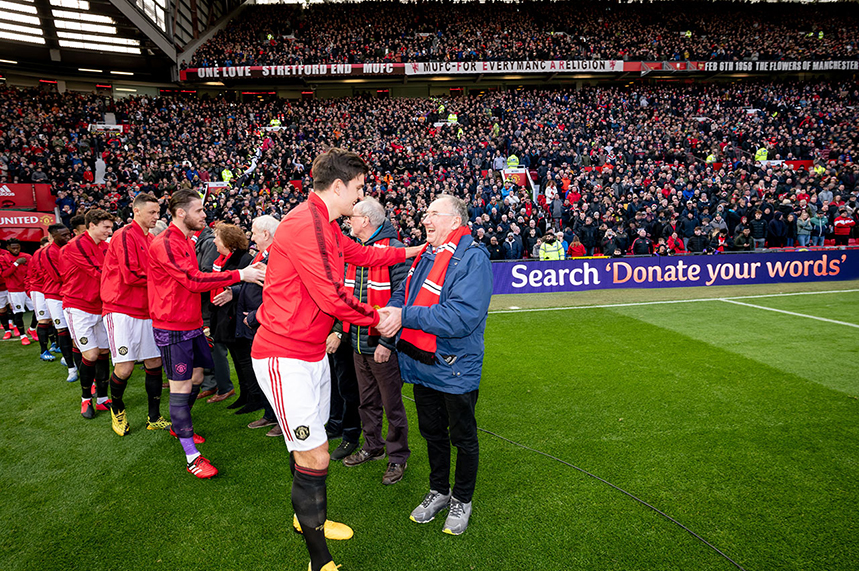

Home Information Trafford Centre Old Trafford Manchester Arndale
Welcome to Old Trafford Home of Manchester United Football Club it is known as one of the most sucessful football clubs in the world. Infact the clubs networth is estimated at a whopping £770 million GBP. The club its self currenly holds the most Premire league titles in the league. Die hard fans all over the world can visit the stauim and get a tour of the staduim see the training ground and get toon see the changing rooms. They even have a souviner shop that you can buy all the new kits and many more club realated items. You can go to Old Trafford to watch united play and make history. Old Trafford have a staduim capacity of 74,140. United have rivals across the city called Manchester City united are known as the red side and city are known as the blue side of Manchester.